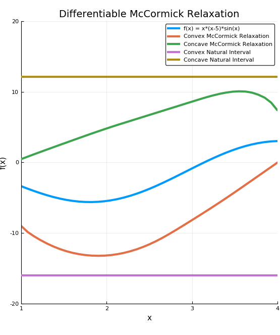

Basic Usage
Bounding a function via smooth McCormick objects
In order to bound a function using a McCormick relaxation. You first construct structure that bounds the input variables then you construct pass these variables two a function.
In the example below, convex/concave relaxations of the function f(x)=sin(2x)+exp(x)-x are calculated at x = 1 on the interval [-2,3].
using EAGO, IntervalArithmetic
# create MC object for x = 2.0 on [1.0,3.0] for relaxing
# a function f(x) on the interval Intv
f(x) = x*(x-5.0)*sin(x)
x = 2.0 # value of independent variable x
Intv = Interval(1.0,4.0) # define interval to relax over
# create McCormick object
xMC = MC{1,NS}(x,Intv,1)
fMC = f(xMC) # relax the function
cv = fMC.cv # convex relaxation
cc = fMC.cc # concave relaxation
cvgrad = fMC.cv_grad # subgradient/gradient of convex relaxation
ccgrad = fMC.cc_grad # subgradient/gradient of concave relaxation
Iv = fMC.Intv # retrieve interval bounds of f(x) on IntvThe plotting the results we can easily generate visual the convex and concave relaxations, interval bounds, and affine bounds constructed using the subgradient at the middle of X.

If we instead use the constructor xMC = MC{1,Diff}(x,Intv,1) in the above code, and then re-plot we arrive at the below graph
set_diff_relax!(1)
This can readily be extended to multivariate functions as shown below
f(x) = max(x[1],x[2])
x = [2.0 1.0] # values of independent variable x
Intv = [Interval(-4.0,5.0), Interval(-5.0,3.0)] # define intervals to relax over
# create McCormick object
xMC = [MC{2,Diff}(x[i], Intv[i], i) for i=1:2)]
fMC = f(xMC) # relax the function
cv = fMC.cv # convex relaxation
cc = fMC.cc # concave relaxation
cvgrad = fMC.cv_grad # subgradient/gradient of convex relaxation
ccgrad = fMC.cc_grad # subgradient/gradient of concave relaxation
Iv = fMC.Intv # retrieve interval bounds of f(x) on Intv